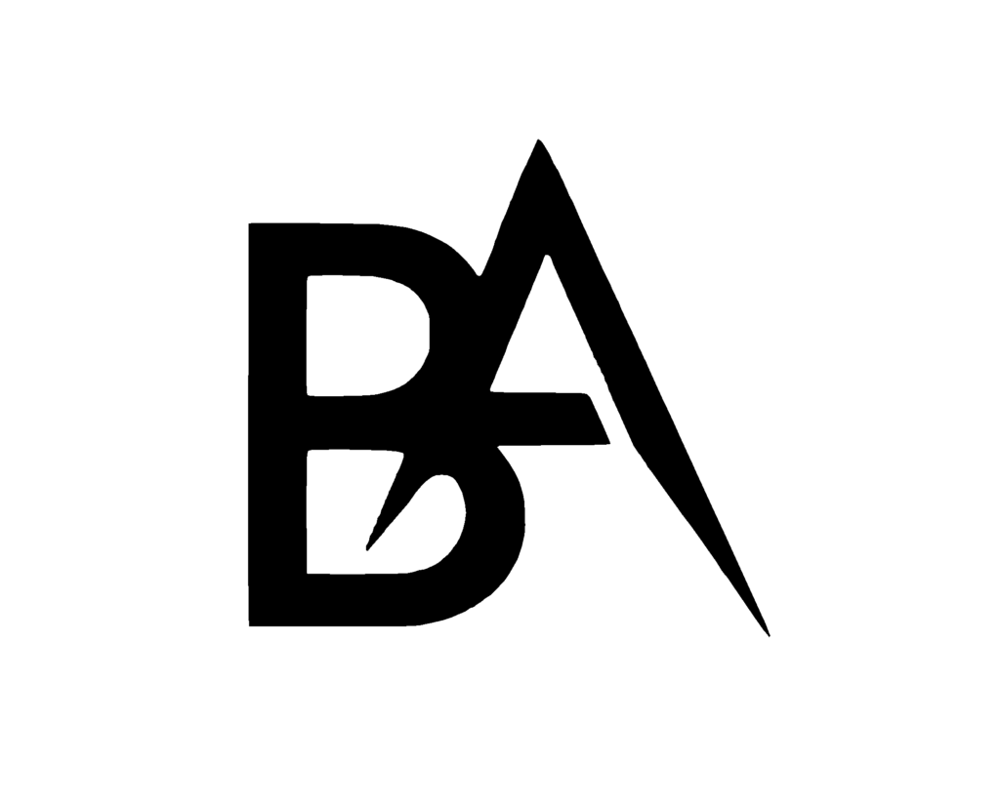
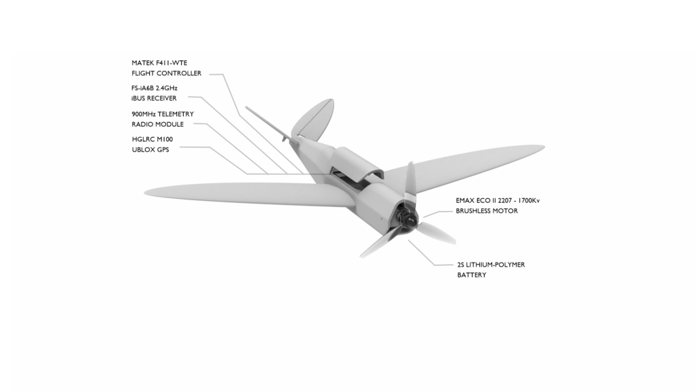
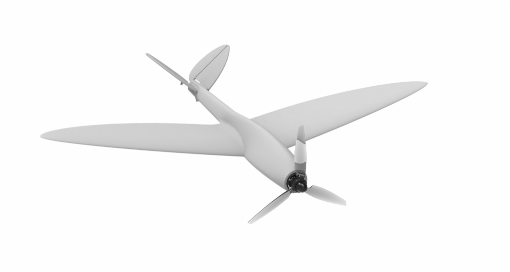
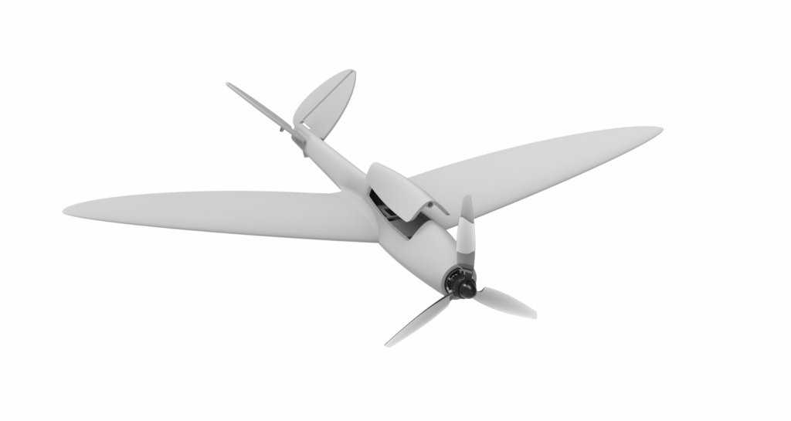
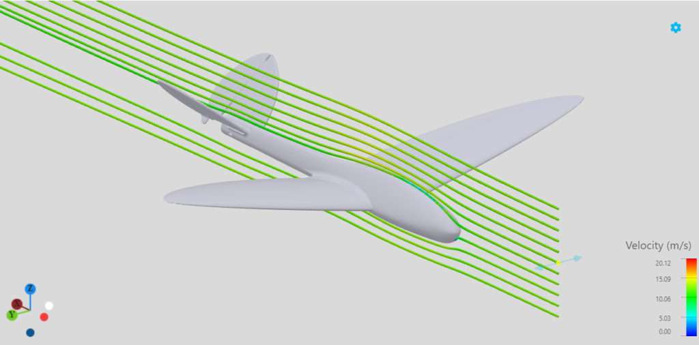
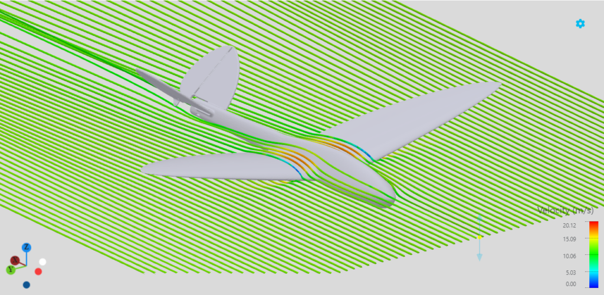
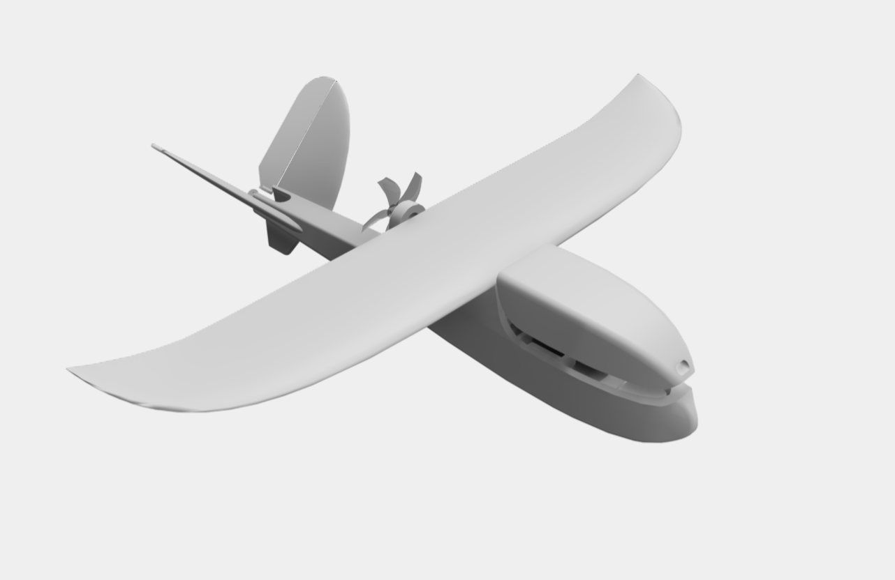

Blackstock Aerospace
Autonomous Fixed-Wing UAV Design & Flight Dynamics
Welcome to my portfolio — a detailed look at my pet project, an autonomous drone working title “Stingray.”
Airframe
- Primarily foaming LW-TPU for the main airframe, chosen for impact resistance and light weight, with LW-PLA used for the wings, stabilizers, and control surfaces
- Powered by an HGLRC SPECTER 1202.5 11000Kv brushless motor and a 2S LiPo battery, balancing power with efficiency
Avionics
- FlyingRC F405 Wing Mini flight controller running INAV 9.0.1
- FS-iA6B 2.4GHz iBUS receiver for communication
- 900MHz telemetry radio for long-range data
- HGLRC M100 UBLOX GPS for navigation
Explore below for more on the build.






| Datum | Value |
|---|---|
| $S$ | $0.0404\;\text{m}^2$ |
| $b$ | $0.535\;\text{m}$ |
| $W$ | $0.155\;\text{kg}$ |
| $T$ | $1.177\;\text{N}$ |
| $\lambda$ | $\approx 1$ |
| $\Lambda$ | $\approx 0^\circ$ |
| $\Gamma$ | $\approx 2^\circ$ |
| $\Gamma_\text{eff}$ | $\approx 4.5^\circ$ |
| $Z_{CP}$ | $0.035\;\text{m}$ |
| $l_t$ | $0.205\;\text{m}$ |
| $MAC$ | $0.0854\;\text{m}$ |
| $AR$ | $7.09$ |
| $I_{xx}$ | $4.76 \times 10^{-3}\ \text{kg} \cdot \text{m}^2$ |
| $I_{yy}$ | $3.13 \times 10^{-3}\ \text{kg} \cdot \text{m}^2$ |
| $I_{zz}$ | $7.12 \times 10^{-3}\ \text{kg} \cdot \text{m}^2$ |
| $\alpha_0$ | $-5.239^\circ$ |
| $C_{L_\alpha}$ | $4.826\;\text{rad}^{-1}$ |
| $C_{m_\alpha}$ | $-0.386\;\text{rad}^{-1}$ |
| $V_\text{stall}$ | $6.70\;\text{m/s}$ |
| $C_V$ | $0.0535$ |
| $C_{n_\beta}$ | $0.205\;\text{rad}^{-1}$ |
| $C_{\ell_\beta}$ | $-0.042\;\text{rad}^{-1}$ |
| $C_{\ell_p}$ | $-0.804\;\text{rad}^{-1}$ |
| $k_\text{yaw}$ | $3.23 \times 10^{-4}$ |
| $k_\text{pitch}$ | $3.85 \times 10^{-4}$ |
The dihedral effect is the self-stabilizing behavior of an aircraft whose wings angle upward from root to tip, granting it the ability to self-correct roll angle in a side-slip.
During a side-slip — from crosswind or turbulence, say — the lower wing sees an increased effective angle of attack, and therefore more lift, than the higher wing. That imbalance creates a rolling moment back toward level, without pilot input.
With dihedral and ruddervators together, yaw can indirectly control roll: a ruddervator-induced yaw creates a side-slip, which the dihedral angle turns into a lift imbalance and thus a roll moment — letting a pilot steer the plane’s orientation using the ruddervators alone.
Using dihedral for yaw-roll coupling — controlling roll through ruddervators alone — requires a fairly aggressive dihedral angle for adequate response. But push it too far and directional stability suffers, risking Dutch Roll: an oscillatory instability where the plane gyrates in both yaw and roll.
To counter this, I added a ventral tailfin, which increases vertical surface area beneath the fuselage and restores directional stability — balancing the roll authority gained from dihedral against the yaw stability it costs, for smoother, stabler flight.
This control scheme, when properly tuned, is quite effective for its mechanical minimalism — but introduces a GNC challenge: phase-lag. Phase-lag is the timing mismatch between command and consequence: the pilot or flight controller asks for a correction, but the airframe only answers after the yaw→sideslip→roll sequence has had time to act.